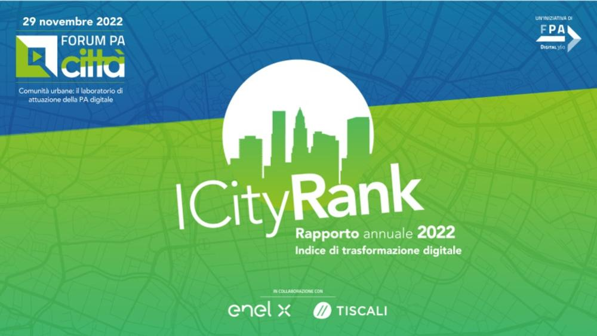

ICity Rank 2022: Firenze e Milano sono le città più digitali
Firenze e Milano si confermano in testa al ranking di digitalizzazione, al terzo posto a pari merito Bergamo, Bologna, Cremona, Modena, Roma Capitale e Trento. Aumenta il livello medio di digitalizzazione delle città, diminuiscono le distanze dal vertice. Si apre una nuova fase di utilizzo effettivo da parte dei cittadini e integrazione delle tecnologie digitali. Sono questi i risultati di ICity Rank 2022, la ricerca di FPA sulla digitalizzazione dei comuni capoluogo presentata a FORUM PA Città.
Classifica delle città italiane più digitali
Presentato il rapporto ICity Rank 2022 di FPA, che stila la graduatoria dei 108 Comuni Capoluogo sulla base dell'indice di trasformazione digitale, ottenuto come media aritmetica di otto indici settoriali, che sintetizzano 35 indicatori basati su 150 variabili: servizi online, canali social, piattaforme abilitanti, open data, apertura, WiFi pubblico, app municipali e IoT.
Graduatoria complessiva
| Rank | Punteggio | Città | |||||
|---|---|---|---|---|---|---|---|
| 1 | 90 | Firenze | |||||
| 2 | 87 | Milano | |||||
| 3 | 87 | Bergamo | Bologna | Cremona | Modena | Roma | Trento |
| 9 | 82 | Cagliari | Genova | ||||
| 11 | 78 | Parma | Torino | ||||
| 13 | 76 | Brescia | Venezia | ||||
| 15 | 75 | Palermo | Prato | Reggio Emilia | Rimini | Venezia | |
| 20 | 74 | Bari | Cesena | Pisa | |||
I Risultati
La classifica dei Comuni più digitali d'Italia nel 2022 vede confermarsi in vetta Firenze, seguita al secondo posto da Milano, e al terzo da un gruppo di città a pari merito: Bergamo, Bologna, Cremona, Modena, Roma Capitale e Trento. Sono queste le posizioni di testa di ICity Rank 2022, la ricerca di FPA.
Scorrendo la graduatoria, alla nona posizione troviamo l'ex aequo di Cagliari e Genova, all'11esima Parma e Torino, alla 13esima Brescia e Venezia, alla 15esima Palermo, Prato, Reggio-Emilia, Rimini e Verona, alla 20esima Bari, Cesena e Pisa, alla 23esima Padova, alla 24esima Lecce, Siena e Vicenza. Tutte queste, insieme ai comuni sul podio, compongono il gruppo delle 26 città “digitali”, capaci di utilizzare in modo diffuso, organico e continuativo le nuove tecnologie. Altre 75 sono invece in una fase intermedia nel percorso di crescita digitale e 7 in fondo classifica, a livello critico con indice inferiore a 30 (Rieti, Avellino, Benevento, Foggia, Agrigento, Enna e all'ultimo posto Isernia). Tra i comuni digitali, ben 10 sono capoluoghi metropolitani (su 14 complessivi), quasi tutti del Centro/Nord, a testimonianza del permanere di un certo ritardo del Mezzogiorno e delle realtà più piccole nonostante si evidenzi una tendenza al recupero.
A livello generale, infatti, si assiste a una decisa accelerazione nel livello medio di digitalizzazione e a un riequilibrio che ha portato ad accorciare le distanze dal vertice anche da parte di diverse realtà tra le città del Sud e i centri più piccoli. Tra i casi di crescita più significativi, Messina, che nel corso del 2022 è migliorata di ben 34 posizioni (dalla 62^ alla 28^), L'Aquila, Cuneo, Imperia e Trapani, che guadagnano 16 punti. Cagliari, Palermo e Bari si confermano al vertice tra le città del Mezzogiorno. Dopo Lecce, anche Messina, Napoli e Pescara sono ormai vicine all'ingresso tra le città digitali.